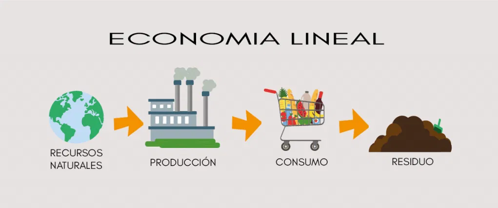

La economía lineal es el modelo tradicional de producción y consumo que ha predominado durante gran parte del desarrollo industrial. Se basa en un proceso simple pero poco sostenible: extraer materias primas, fabricar productos, utilizarlos y desecharlos. Este ciclo, conocido como “extraer → producir → consumir → tirar”, utiliza grandes cantidades de recursos naturales sin considerar su capacidad de regeneración ni el impacto de los residuos generados.

Aunque este sistema ha permitido un gran crecimiento económico y tecnológico, también ha provocado importantes consecuencias ambientales:
- Sobreexplotación de recursos naturales.
- Aumento de emisiones y contaminación en el aire, el agua y el suelo.
- Generación masiva de residuos, especialmente residuos de aparatos eléctricos y electrónicos (RAEE).
En el ámbito de las TIC, los efectos son especialmente visibles: consumo acelerado de dispositivos, ciclos de renovación cada vez más cortos y toneladas de equipos que se desechan sin repararse ni reutilizarse. Esto genera un impacto ambiental notable y un desperdicio de materiales valiosos como litio, cobre, oro o tierras raras.
Además del impacto medioambiental, la economía lineal supone riesgos para la economía y la sociedad. La dependencia de materias primas finitas hace que los costes de producción aumenten y que las empresas sean más vulnerables ante crisis energéticas o interrupciones en la cadena de suministro. Ante esta situación, numerosos gobiernos y organizaciones están impulsando el cambio hacia un modelo más sostenible: la economía circular.
Este nuevo enfoque propone mantener los recursos en circulación el mayor tiempo posible, reducir la generación de residuos y apostar por la reparación, el reacondicionamiento y el reciclaje. Esto beneficia tanto al planeta como a las empresas y consumidores.